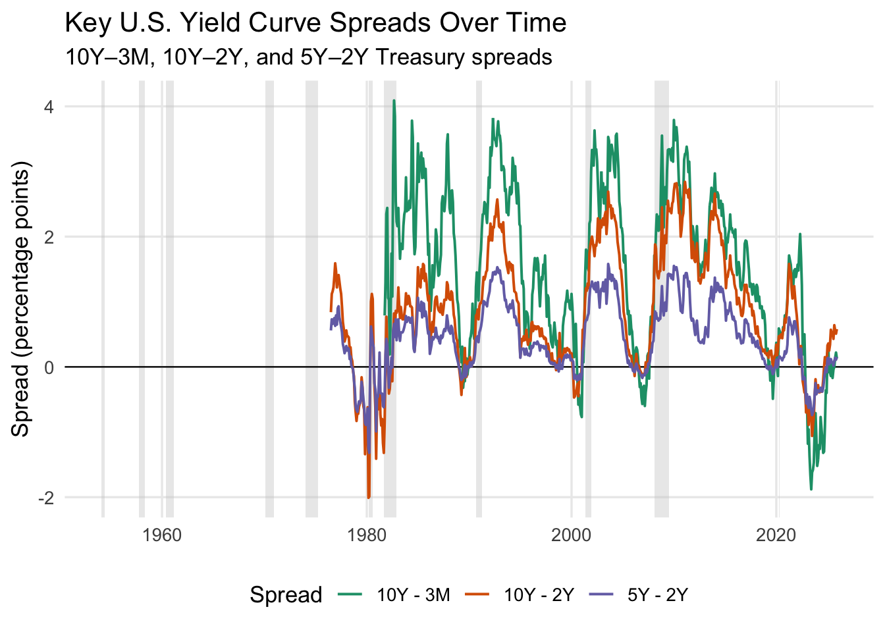
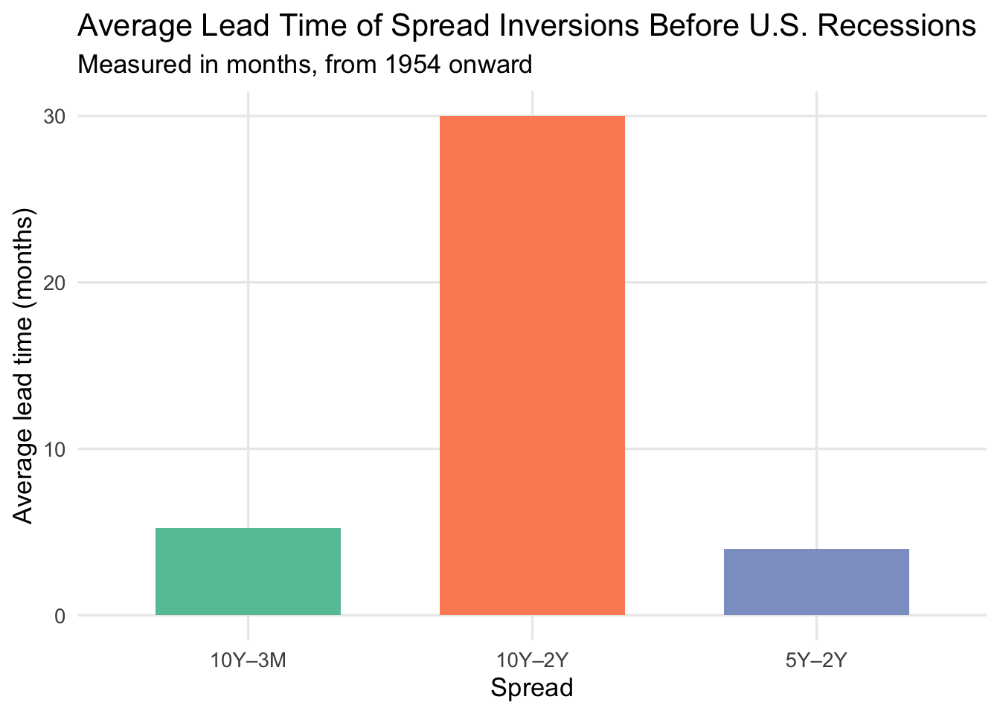
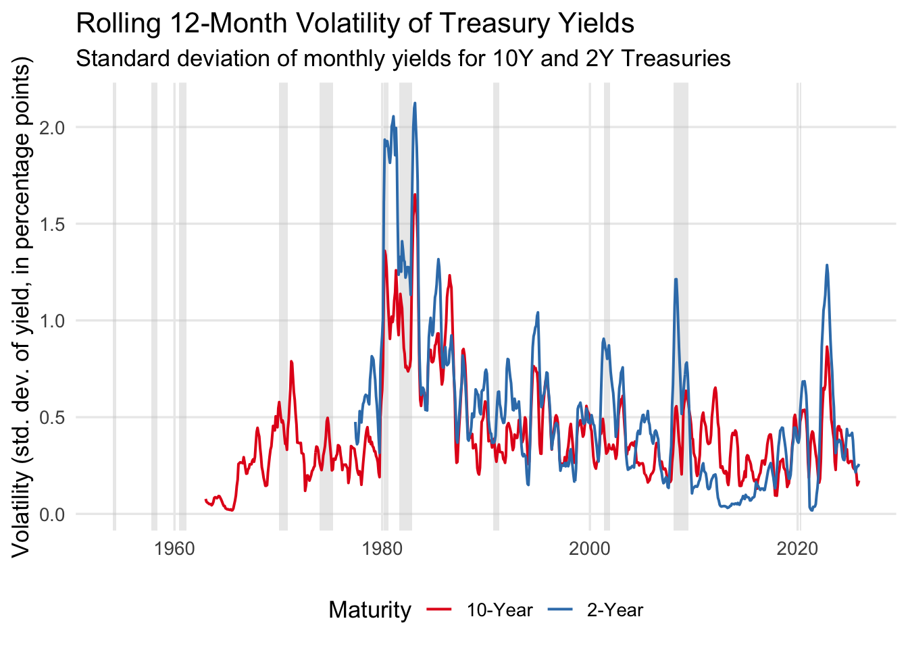
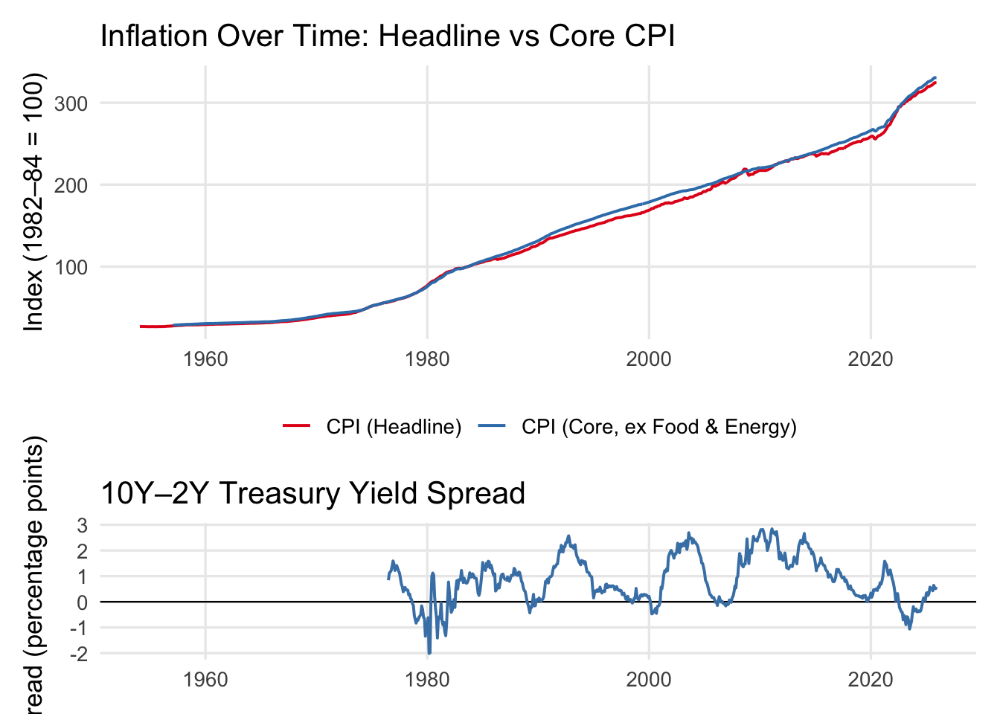
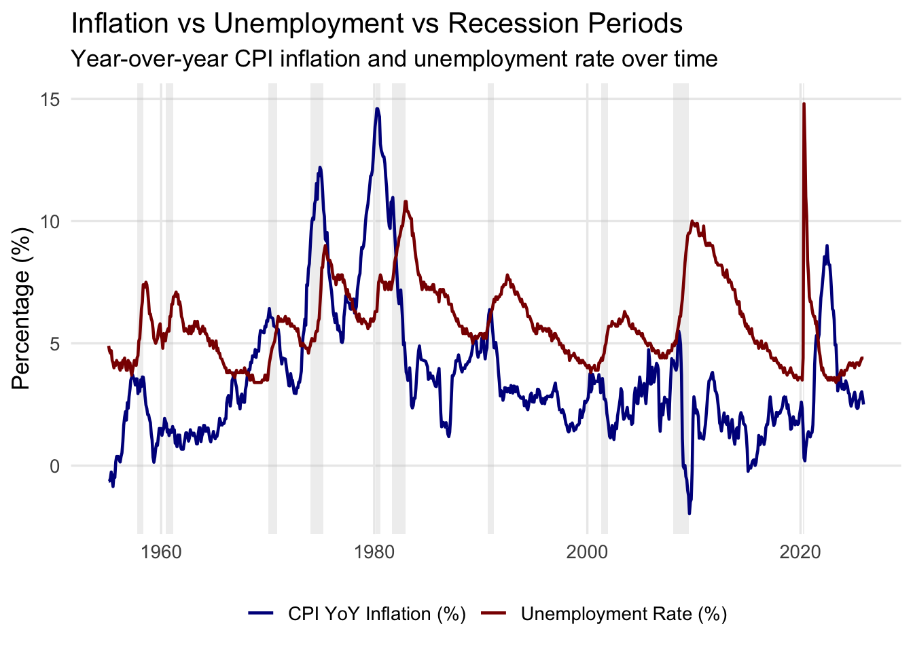
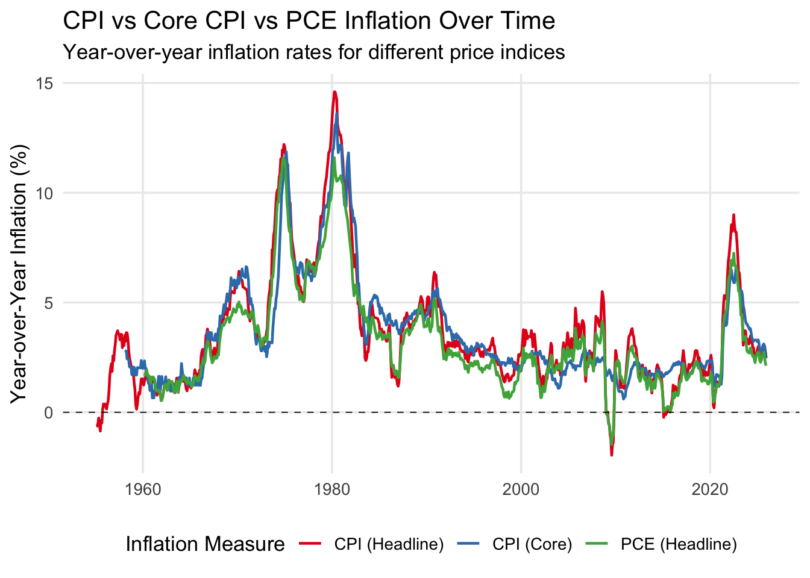
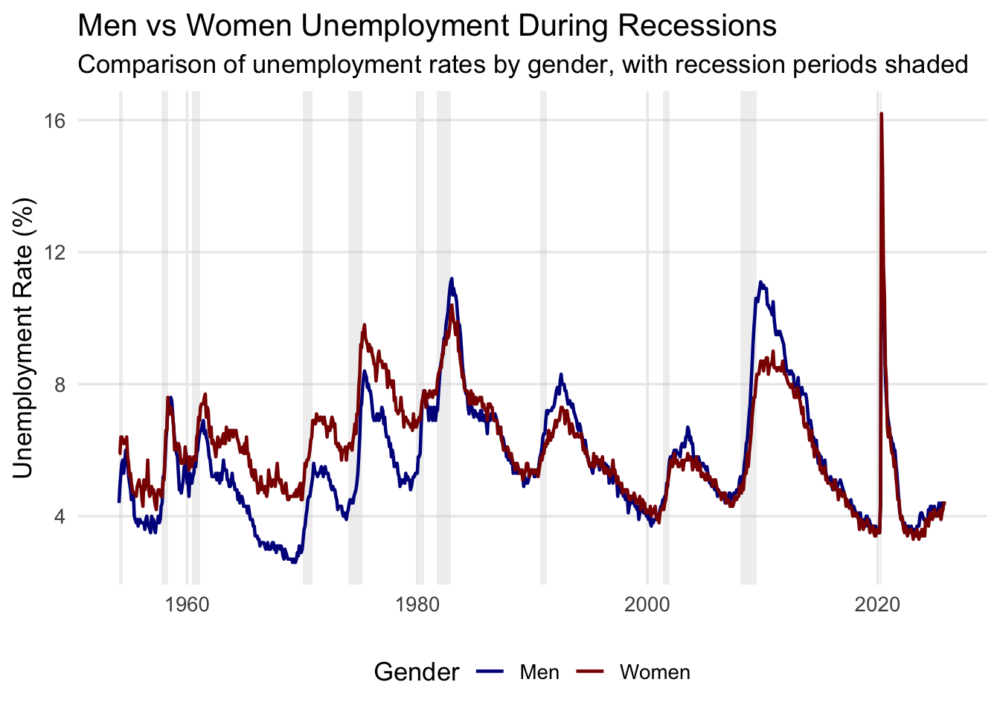
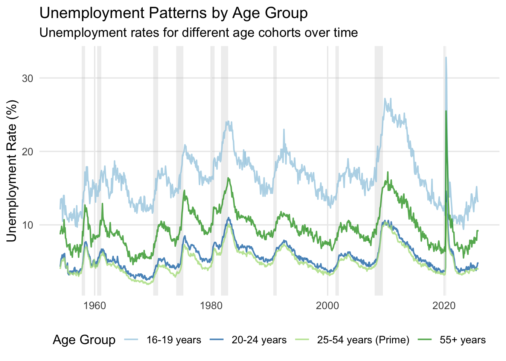
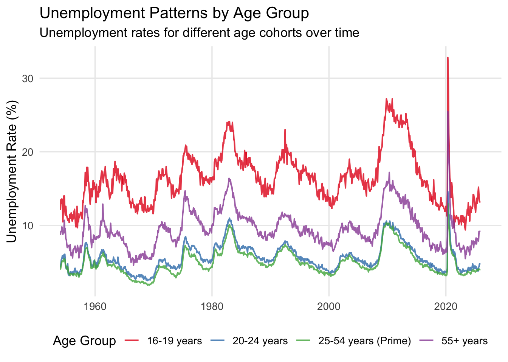
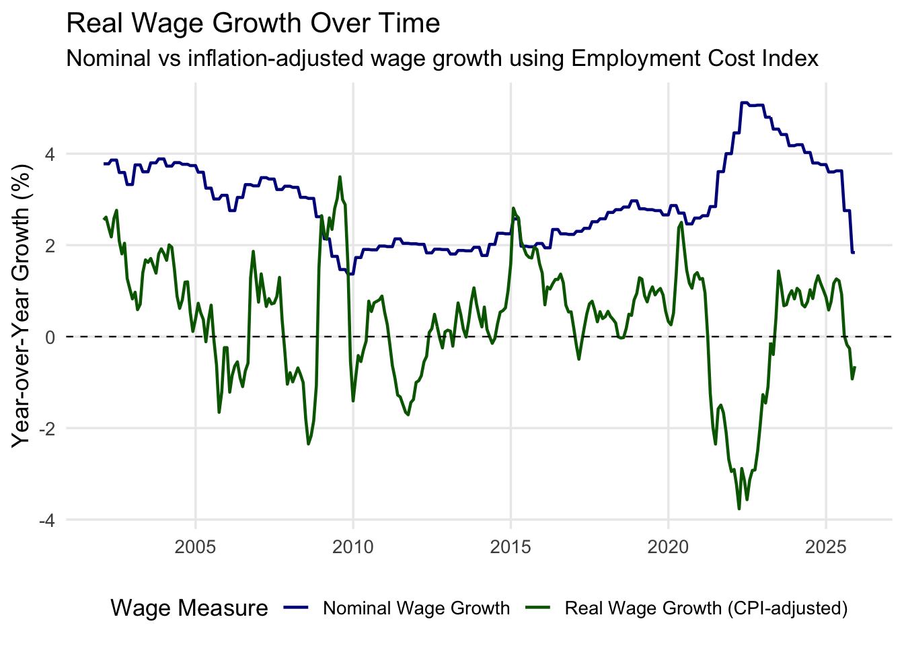

This plot shows the shape of the U.S. Treasury yield curve at the most recent month and this was for a starting understanding of what the curve would look like, comparing yields from 3-month to 30-year maturities. It captures the instantaneous structure of interest rates at a moment in time. The plotting style we used for this is a simple line plot with plots, whilst also making sure to use viridis for colourblind friendly features. The x-axis is for the maturity and the y-axis is the yield in percentage terms. Overall, the inference we drew from this is that the curve conveys the market’s expectations, so if the curve is in an upward-sloping direction then it shows normal conditions and also the expectations of growth and inflation. This also sets a base of how the curve would change and would imply macroeconomic turning points
Warning: Removed 1070 rows containing missing values or values outside the scale range
(`geom_line()`).

This plot shows how yields across different maturities (3M, 2Y, 5Y, 10Y, 30Y) evolve over time. It helped us compare how short vs long rates respond to economic conditions.The plotting style we used here is a multi-line time series (again using viridis discrete palette for colour blind friendly feature), the lines are differentiated by colour and legend.What we learnt from this is that the short term yields move sharply with monetary policy like the federal rate changes. The long term yields on the other hand reflect expectations for long run growth and inflation. The periods where short term yields rise above long term yields talk about the yield curve inversions. Also, the strong upward spikes typically accompany tightening cycles like economic overheating or anti inflation policy. Overall, the plot helps in highlighting structural differences in rate sensitivity.
3.0.3 10Y-2Y Spread with Recessions
Code
# 1. Compute 10y–2y spreadmaster <- master |>mutate(spread_10y_2y = dgs10 - dgs2)# 2. Identify contiguous recession periods from USREC (0/1)recessions <- master |>filter(usrec ==1) |>arrange(date) |>mutate(gap =as.numeric(date -lag(date)),grp =cumsum(is.na(gap) | gap >40) # new group when gap > ~1 month ) |>group_by(grp) |>summarise(start =min(date),end =max(date),.groups ="drop" )# 3. Plot spread with recession shadingggplot() +# recession bandsgeom_rect(data = recessions,aes(xmin = start, xmax = end, ymin =-Inf, ymax =Inf),inherit.aes =FALSE,fill ="grey80",alpha =0.4 ) +# zero line (where inversion happens)geom_hline(yintercept =0, colour ="black", linewidth =0.5) +# spread linegeom_line(data = master,aes(x = date, y = spread_10y_2y),colour ="steelblue",linewidth =0.8 ) +labs(title ="10-Year minus 2-Year Treasury Yield Spread",subtitle ="Shaded areas denote NBER recession periods (USREC)",x =NULL,y ="Spread (percentage points)" ) +theme_minimal(base_size =13) +theme(panel.grid.minor =element_blank() )
Warning: Removed 269 rows containing missing values or values outside the scale range
(`geom_line()`).

This plot displays the difference between 10-year and 2-year Treasury yields, with NBER recession periods shaded. A negative spread would indicate yield curve inversion.Here, this is a single line series plot where the grey shaded rectangles represent recession, we have also included the zero line for visual anchor. Through this we incurred that every US recession in the past 50+ years has been preceded by a 10Y-2Y inversion. The lead time varies but from what we see the inversions typically occur 6-15 months before recessions but also not every inversion leads to an immediate recession, there are some false positives. This plot is confirming the predictive power of the yield curve
Warning: Removed 870 rows containing missing values or values outside the scale range
(`geom_line()`).
This plot compares multiple spreads commonly used to evaluate recession risk. It shows which one tends to invert first and which is the strongest signal historically.It is a multi line time series plot and the zero line is for the conversion threshold. The time frequency of 10Y-3M is the most reliable and earliest predictor of recessions, the 10Y-2Y also predicts recessions but often inverts later and 5Y-2Y is prone to false positives, and when all spreads invert the recession risk becomes extremely high. This plot also is a signal as to why analysts look at multiple spreads and not just one
# -----------------------------------------# 3. Function to compute lead time for one spread# -----------------------------------------lead_time <-function(spread_col) {map_df(recession_starts, function(rec_start) {# When did the spread first invert BEFORE the recession? invert_date <- df |>filter(date < rec_start, !!sym(spread_col) <0) |>arrange(date) |>slice_tail(n =1) |># most recent inversionpull(date)tibble(recession_start = rec_start,spread = spread_col,lead_months =ifelse(length(invert_date) ==0,NA,interval(invert_date, rec_start) %/%months(1)) ) })}# -----------------------------------------# 4. Apply to all spreads# -----------------------------------------lead_times <-bind_rows(lead_time("spread_10y_3m"),lead_time("spread_10y_2y"),lead_time("spread_5y_2y"))lead_times
# A tibble: 33 × 3
recession_start spread lead_months
<date> <chr> <dbl>
1 1954-01-31 spread_10y_3m NA
2 1957-09-30 spread_10y_3m NA
3 1960-05-31 spread_10y_3m NA
4 1970-01-31 spread_10y_3m NA
5 1973-12-31 spread_10y_3m NA
6 1980-02-29 spread_10y_3m NA
7 1981-08-31 spread_10y_3m NA
8 1990-08-31 spread_10y_3m 10
9 2001-04-30 spread_10y_3m 4
10 2008-01-31 spread_10y_3m 6
# ℹ 23 more rows
Code
# -----------------------------------------# 5. Average lead times (bar plot)# -----------------------------------------avg_leads <- lead_times |>group_by(spread) |>summarise(mean_lead =mean(lead_months, na.rm =TRUE)) |>mutate(spread =factor( spread,levels =c("spread_10y_3m", "spread_10y_2y", "spread_5y_2y"),labels =c("10Y–3M", "10Y–2Y", "5Y–2Y") ) )ggplot(avg_leads, aes(x = spread, y = mean_lead, fill = spread)) +geom_col(width =0.65) +scale_fill_brewer(palette ="Set2") +labs(title ="Average Lead Time of Spread Inversions Before U.S. Recessions",subtitle ="Measured in months, from 1954 onward",x ="Spread",y ="Average lead time (months)" ) +theme_minimal(base_size =13) +theme(legend.position ="none",panel.grid.minor =element_blank() )

Shows the average number of months each spread (10Y–3M, 10Y–2Y, 5Y–2Y) inverts before a recession actually begins.We plotted a bar chart for this. Here, we incurred that the 10Y-3M has the longest average lead time and is the most useful early warning. The 10Y-2Y time period has moderate predictive power,5Y-2Y has the shortest lead time and more noise, on an average the yield curve gives 6-15 months of warning before recessions. The conclusion we got from this is that the spreads are not equal and that some may outperform others dramatically.
Code
# 1. Compute 10Y–2Y spreaddf_spread <- master |>arrange(date) |>mutate(spread_10y_2y = dgs10 - dgs2 )# 2. Identify inversion periods (spread < 0) and group themdf_inv <- df_spread |>mutate(is_inverted = spread_10y_2y <0,inv_group =cumsum(is_inverted !=lag(is_inverted, default =FALSE)) ) |>filter(is_inverted)inv_periods <- df_inv |>group_by(inv_group) |>summarise(start =min(date),end =max(date),.groups ="drop" )# 3. For each inversion period, check if a recession occurs within 12 months after it startsinv_periods <- inv_periods |>rowwise() |>mutate(has_recession_next_12m =any( df_spread$usrec ==1& df_spread$date > start & df_spread$date <= start +months(12) ) ) |>ungroup() |>mutate(signal_type =if_else( has_recession_next_12m,"Inversion before recession","Inversion with no recession (false positive)" ) )# 4. Plot: spread with shaded inversion periodsggplot() +# Shaded inversion periods, colored by whether they precede a recessiongeom_rect(data = inv_periods,aes(xmin = start,xmax = end,ymin =-Inf,ymax =Inf,fill = signal_type ),inherit.aes =FALSE,alpha =0.25 ) +# Zero line (inversion threshold)geom_hline(yintercept =0, colour ="black", linewidth =0.4) +# Spread linegeom_line(data = df_spread,aes(x = date, y = spread_10y_2y),colour ="steelblue",linewidth =0.8 ) +scale_fill_manual(name ="Inversion type", values =c("darkgreen", "orange")) +labs(title ="10Y–2Y Yield Spread: True Recession Signals vs False Positives",subtitle ="Shaded regions show periods when 10Y–2Y < 0; color indicates whether a recession followed within 12 months",x =NULL,y ="10Y–2Y spread (percentage points)" ) +theme_minimal(base_size =13) +theme(panel.grid.minor =element_blank(),legend.position ="bottom" )
Warning: Removed 269 rows containing missing values or values outside the scale range
(`geom_line()`).

This plot identifies inversion periods and classifies them as true signals (that is recession follows within 12 months) and false positives (no recession follows). Here the shaded rectangles are for the inversion windows, the rectangles are colour coded by signal type, we also placed a zero line anchor. Here , we incurred that a handful of false positives exist like the 1998-debt crisis, true positives dominate the historical record. False positives tend to occur during periods of temporary financial stress but not real downturns as such. This eventually strengthens the credibility of inversion as a recession predictor while acknowledging limitations. Overall, the plot does add nuance where in the signal seems to be good but not perfect.
Code
# Ensure sorted by datedf_vol <- master |>arrange(date) |>mutate(vol_10y =rollapply(dgs10, width =12, FUN = sd, fill =NA, align ="right"),vol_2y =rollapply(dgs2, width =12, FUN = sd, fill =NA, align ="right") ) |>select(date, vol_10y, vol_2y) |>pivot_longer(cols =-date,names_to ="maturity",values_to ="volatility" ) |>mutate(maturity =factor( maturity,levels =c("vol_10y", "vol_2y"),labels =c("10-Year", "2-Year") ) )ggplot(df_vol, aes(x = date, y = volatility, colour = maturity)) +geom_line(linewidth =0.7) +scale_colour_brewer(name ="Maturity", palette ="Set1") +labs(title ="Rolling 12-Month Volatility of Treasury Yields",subtitle ="Standard deviation of monthly yields for 10Y and 2Y Treasuries",x =NULL,y ="Volatility (std. dev. of yield, in percentage points)" ) +theme_minimal(base_size =13) +theme(legend.position ="bottom",panel.grid.minor =element_blank() )
Warning: Removed 387 rows containing missing values or values outside the scale range
(`geom_line()`).

This plot shows how volatile the 10-year and 2-year yields are over time, using rolling standard deviation.here we plotted a multi line plot, and for computation it uses zoo::rollapply. Overall we incurred from this plot that volatility spikes before and during recessions, reflecting uncertainty. The 2 year yield is more volatile because it is closer to fed policy actions and volatility dropped significantly during the post 2008 low rate regime. Rising volatility precedes most recession periods, providing an alternative risk measure. Overall it reflects the idea that markets become unstable as downturns approach.
Warning: Removed 36 rows containing missing values or values outside the scale range
(`geom_line()`).
Warning: Removed 269 rows containing missing values or values outside the scale range
(`geom_line()`).

This is two-panel visualization, the top headline is CPI vs Core CPI, and the bottom shows the 10Y-2Y spread. This allows for comparison of inflation regimes with yield curve behaviour. Here, we stacked a layout using patchwork, we also wanted to make sure that the spread uses a single viridis colour and zero line. This plot displays that high inflation regimes often precede flattening or inversion of the yield curve which corresponds to tightening cycles. The difference between headline and core CPI tells us whether inflation is supply driven or demand driven. The periods of high inflation like the 70s-80s shows us deep inversions. The inflation spikes in 2021-22 again corresponds to major tightening and curve flattening. This plot connects macro inflation regimes directly to market expectations embedded in the yield curve. ## Inflation / Unemployment / Recession Interaction
3.0.4 Inflation vs Unemployment vs Recession (Multi-line)
This multi-line plot tracks inflation and unemployment together over time, with recession periods shaded gray. It helps us understand the Phillips curve relationship and when it breaks down. The plotting style uses two colored lines (dark blue for inflation, dark red for unemployment) with gray rectangles for recession periods.
Inference: This multi-line plot tracks inflation and unemployment together, with recession periods shaded gray. Most recessions show the classic trade-off: unemployment spikes while inflation drops. But the 1970s-80s broke this pattern—both were high simultaneously (stagflation), which is why the Phillips curve relationship failed then. The Fed faced impossible choices: fighting inflation worsened unemployment, and vice versa. Recent decades show a less clear relationship, suggesting the economy’s dynamics have shifted.
This multi-line plot compares three inflation measures (CPI headline, CPI core, and PCE headline) over time. It uses different colors for each measure and includes a dashed zero line as a reference. The plot helps identify when headline inflation diverges from core, often signaling supply-driven price shocks.
Inference: This multi-line plot compares three inflation measures over time. Core CPI is smoother since it excludes volatile food and energy. When headline CPI spikes above core, it’s usually oil shocks—visible in the 1970s and recently. PCE runs slightly lower than CPI, which is why the Fed prefers it. The gaps between headline and core reveal when inflation comes from commodity price swings versus broader economic forces.
3.0.6 Supply-Driven vs Demand-Driven Inflation vs Yields
This two-panel plot separates supply-driven inflation (energy prices, orange) from demand-driven inflation (core CPI, green), with the 10-year Treasury yield shown in the bottom panel. The top panel uses two colored lines with a dashed zero line, while the bottom panel shows the yield in purple. This helps understand how different inflation sources affect bond markets.
Inference: This two-panel plot separates supply-driven inflation (energy prices, orange) from demand-driven (core inflation, green), with the 10-year yield below. Supply shocks are volatile—they spike during oil crises then crash. Demand-driven inflation is smoother and reflects broader economic conditions. The 10-year yield responds to both but seems more sensitive to persistent demand-driven inflation. Supply shocks push yields up temporarily, but demand-driven inflation has staying power. This matters because the Fed can’t control supply shocks but can influence demand through policy.
3.1 Stagflation & Term Structure Shape
3.1.1 Stagflation Periods: Inflation vs Unemployment
This scatter plot maps inflation against unemployment, with recession periods marked as triangles and stagflation periods shown as larger points. The plot includes dashed red lines marking thresholds (5% inflation, 6% unemployment) to identify stagflation conditions. Circles represent non-recession periods, while triangles mark recessions.
Inference: This scatter plot maps inflation against unemployment, with recession periods marked as triangles. Most points fall in the bottom-right quadrant (high unemployment, low inflation)—the normal trade-off. The top-right quadrant (stagflation) shows both high simultaneously, especially in the 1970s-80s. The dashed lines mark our thresholds (5% inflation, 6% unemployment). Stagflation periods explain why the Fed struggled then: raising rates worsened unemployment, while cutting rates worsened inflation.
Warning: There was 1 warning in `mutate()`.
ℹ In argument: `year_q = +...`.
Caused by warning:
! NAs introduced by coercion
Code
# Create heatmapggplot(df_yield_heatmap, aes(x = maturity, y =reorder(quarter, year_q), fill = yield)) +geom_tile() +scale_fill_distiller(name ="Yield (%)", palette ="YlOrRd", direction =1, labels =label_percent(scale =0.01)) +labs(title ="Dynamic Term-Structure Evolution: Yield Curve Heatmap",subtitle ="Quarterly average yields across maturities, showing yield curve shape evolution over time",x ="Maturity",y ="Quarter" ) +theme_minimal(base_size =12) +theme(axis.text.y =element_text(size =6),panel.grid =element_blank(),legend.position ="right" ) +# Show every 5th quarter label to reduce clutterscale_y_discrete(breaks =function(x) x[seq(1, length(x), by =10)])

This heatmap visualizes yield curve evolution over time, with warmer colors (yellow-orange-red) indicating higher yields. Each row represents a quarter, and reading across shows the curve shape at that time. The plot uses a sequential color palette to show yield levels across maturities (3M to 30Y) from top to bottom chronologically.
Inference: This heatmap shows yield curve evolution over time, with warmer colors indicating higher yields. Each row represents a quarter; reading across shows the curve shape. Normal upward-sloping curves get warmer moving right (longer maturities). Inversions appear as horizontal bands where shorter maturities (left) are warmer than longer ones (right), and these historically precede recessions. Major inversions occurred in the early 1980s, before 2008, and recently. The overall color shift shows yields have generally fallen since the 1980s.
3.2 Demographic Analysis
3.2.1 Unemployment by Demographics
Code
# Prepare demographic unemployment datadf_demo_unemp <- master |>select( date, unrate, # Total lns14000001, # Men lns14000002, # Women lns14000003, # White lns14000006, # Black lns14000009 # Hispanic ) |>pivot_longer(cols =-date,names_to ="demographic",values_to ="unemployment_rate" ) |>filter(!is.na(unemployment_rate)) |>mutate(demographic =factor( demographic,levels =c("unrate", "lns14000001", "lns14000002", "lns14000003", "lns14000006", "lns14000009"),labels =c("Total", "Men", "Women", "White", "Black", "Hispanic") ) )ggplot(df_demo_unemp, aes(x = date, y = unemployment_rate, colour = demographic)) +geom_line(linewidth =0.7, alpha =0.8) +scale_colour_brewer(name ="Demographic Group", palette ="Set2") +labs(title ="Unemployment Rate by Demographics",subtitle ="Unemployment rates for different demographic groups over time",x =NULL,y ="Unemployment Rate (%)" ) +theme_minimal(base_size =13) +theme(legend.position ="bottom",panel.grid.minor =element_blank() )

This multi-line plot shows unemployment rates across different demographic groups (Total, Men, Women, White, Black, Hispanic) over time. Each group is represented by a different colored line, making it easy to compare disparities. The plot reveals how different groups experience the labor market differently.
Inference: This multi-line plot reveals persistent labor market disparities. Black and Hispanic workers consistently face much higher unemployment than White workers—often double or more. These gaps exist even in good times, pointing to structural issues beyond economic cycles. Gender patterns have shifted: women had higher unemployment in the 1950s-60s, but that reversed in recent decades. During recessions, all groups suffer, but racial gaps widen, making things worse for already disadvantaged workers.
3.2.2 Men vs Women Unemployment During Recessions
Code
# Prepare men vs women data with recession indicatordf_gender_recession <- master |>select(date, lns14000001, lns14000002, usrec) |>filter(!is.na(lns14000001), !is.na(lns14000002)) |>pivot_longer(cols =c(lns14000001, lns14000002),names_to ="gender",values_to ="unemployment_rate" ) |>mutate(gender =factor( gender,levels =c("lns14000001", "lns14000002"),labels =c("Men", "Women") ),is_recession =factor(usrec, levels =c(0, 1), labels =c("Expansion", "Recession")) )# Identify recession periods for shadingrecessions_gender <- df_gender_recession |>filter(usrec ==1) |>distinct(date) |>arrange(date) |>mutate(gap =as.numeric(date -lag(date)),grp =cumsum(is.na(gap) | gap >40) ) |>group_by(grp) |>summarise(start =min(date),end =max(date),.groups ="drop" )ggplot() +# Recession shadinggeom_rect(data = recessions_gender,aes(xmin = start, xmax = end, ymin =-Inf, ymax =Inf),inherit.aes =FALSE,fill ="grey80",alpha =0.3 ) +# Gender linesgeom_line(data = df_gender_recession,aes(x = date, y = unemployment_rate, colour = gender),linewidth =0.8 ) +scale_colour_manual(name ="Gender", values =c("darkblue", "darkred")) +labs(title ="Men vs Women Unemployment During Recessions",subtitle ="Comparison of unemployment rates by gender, with recession periods shaded",x =NULL,y ="Unemployment Rate (%)" ) +theme_minimal(base_size =13) +theme(legend.position ="bottom",panel.grid.minor =element_blank() )
This plot compares men’s and women’s unemployment rates over time, with recession periods shaded gray. It uses two colored lines (dark blue for men, dark red for women) to show how each gender experiences economic cycles differently. The gray rectangles highlight recession periods to see how gender patterns change during downturns.
Inference: This plot compares men’s and women’s unemployment over time, with recession periods shaded. In the 1970s-80s, men’s unemployment spiked higher during recessions because they dominated manufacturing and construction. Women’s unemployment was more stable, partly due to concentration in services and education. The 2008 recession changed this—women’s unemployment caught up and even exceeded men’s, reflecting how the Great Recession hit services and government jobs. Recent patterns have converged as the economy became more balanced.
3.2.3 Younger vs Older Workers’ Unemployment Patterns
Code
# Prepare age-based unemployment datadf_age_unemp <- master |>select( date, lns14000012, # 16-19 years lns14000089, # 20-24 years lns14000025, # 25-54 years (prime age) lns14000036 # 55+ years ) |>pivot_longer(cols =-date,names_to ="age_group",values_to ="unemployment_rate" ) |>filter(!is.na(unemployment_rate)) |>mutate(age_group =factor( age_group,levels =c("lns14000012", "lns14000089", "lns14000025", "lns14000036"),labels =c("16-19 years", "20-24 years", "25-54 years (Prime)", "55+ years") ) )ggplot(df_age_unemp, aes(x = date, y = unemployment_rate, colour = age_group)) +geom_line(linewidth =0.7, alpha =0.8) +scale_colour_brewer(name ="Age Group", palette ="Set1") +labs(title ="Unemployment Patterns by Age Group",subtitle ="Unemployment rates for different age cohorts over time",x =NULL,y ="Unemployment Rate (%)" ) +theme_minimal(base_size =13) +theme(legend.position ="bottom",panel.grid.minor =element_blank() )

This multi-line plot shows unemployment rates across different age groups (16-19, 20-24, 25-54, 55+) over time. Each age group is represented by a different colored line, revealing how age affects labor market outcomes. The plot highlights that younger workers consistently face much higher unemployment rates.
Inference: This multi-line plot shows unemployment by age group. Teenagers (16-19) and young adults (20-24) consistently have much higher unemployment—often 15-20% even in good times, partly due to part-time work and being laid off first. Prime-age workers (25-54) fare best, usually staying under 5% in normal times. Older workers (55+) are in the middle but face longer job searches when unemployed. During recessions, the young get hit hardest—unemployment can spike to 25% or more while prime-age workers might only reach 8-10%.
3.2.4 Real Wage Inequality (High vs Low Income)
Code
# Use Employment Cost Index as proxy for wages# Calculate real wage growth by deflating with CPIdf_wages <- master |>arrange(date) |>mutate(# Employment Cost Index (already an index)eci = eciallciv,# Calculate real ECI by deflating with CPI# Use base period CPI (e.g., 1982-84 = 100) as referencecpi_index = cpiaucsl,# Real wage index = ECI / CPI * 100 (normalize to base period)real_wage_index = (eci / cpi_index) *100 ) |>select(date, eci, real_wage_index) |>filter(!is.na(eci), !is.na(real_wage_index)) |>mutate(# Calculate year-over-year growth ratesnominal_wage_growth = (eci /lag(eci, 12) -1) *100,real_wage_growth = (real_wage_index /lag(real_wage_index, 12) -1) *100 ) |>filter(!is.na(nominal_wage_growth), !is.na(real_wage_growth))# Note: ECI data is limited, so we show what's available# For a more complete analysis, we'd need wage data by income quintiledf_wage_long <- df_wages |>select(date, nominal_wage_growth, real_wage_growth) |>pivot_longer(cols =-date,names_to ="wage_type",values_to ="growth_rate" ) |>mutate(wage_type =factor( wage_type,levels =c("nominal_wage_growth", "real_wage_growth"),labels =c("Nominal Wage Growth", "Real Wage Growth (CPI-adjusted)") ) )ggplot(df_wage_long, aes(x = date, y = growth_rate, colour = wage_type)) +geom_line(linewidth =0.8) +geom_hline(yintercept =0, colour ="black", linewidth =0.4, linetype ="dashed") +scale_colour_manual(name ="Wage Measure", values =c("darkblue", "darkgreen")) +labs(title ="Real Wage Growth Over Time",subtitle ="Nominal vs inflation-adjusted wage growth using Employment Cost Index",x =NULL,y ="Year-over-Year Growth (%)" ) +theme_minimal(base_size =13) +theme(legend.position ="bottom",panel.grid.minor =element_blank() )

This plot compares nominal wage growth (blue) with real wage growth (green, CPI-adjusted) over time. It uses two colored lines with a dashed zero line as reference. The gap between the lines shows how much inflation erodes purchasing power. This helps understand the difference between what paychecks say and what they actually buy.
Inference: This plot compares nominal wage growth (blue) with real wage growth (green, CPI-adjusted). When the green line goes negative, workers get a real pay cut even if nominal wages rise. This happened during high-inflation periods like the 1970s and recently. The gap between the lines represents the inflation tax—how much inflation erodes purchasing power. This is aggregate data, so it doesn’t show how low-wage workers often get hit harder, but it reveals the overall squeeze on workers.